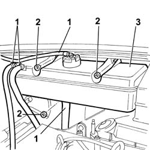
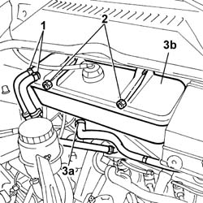
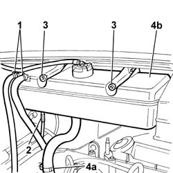
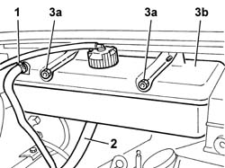

1088B10 ENGINE COOLING TANK - R + R
- Path
- Procedures > 10 ENGINE UNIT > 1088 ENGINE COOLING > 1088B ENGINE COOLING TANK - R + R > 1088B10 ENGINE COOLING TANK - R + R
- Kind
- repair procedure (removal / refitting; the operation number is the code)
- Applies to
- all engines; all production periods
- Interactive page
- https://sloeber94.github.io/elrnDB-fDct/en/#/244000942
Applies to: engines: 2.8 JTD 8V; all production periods
 Removing
Removing
 Refitting
Refitting1. Release the coolant pipes opening the retaining bands.
2. Undo the nuts securing the engine coolant reservoir.
3. Remove the engine coolant reservoir.

Applies to: engines: 2.8 JTD 8V; all production periods
Refitting
Removing- Fit the engine cooling reservoir and tighten the retaining nuts.
- Connect the coolant pipes to the reservoir.
Applies to: engines: 2.0 JTD 8V; all production periods
Removing
Refitting1. Disconnect the collare securing the coolant hoses to the reservoir.
2. Undo the nuts securing the engine coolant reservoir.
3. Disconnect the coolant supply pipe to the water pump (3a) and remove the coolant reservoir (3b).

Applies to: engines: 2.0 JTD 8V; all production periods
Refitting
Removing- Fit the engine cooling reservoir and tighten the retaining nuts.
- Connect the hose to the rigid section of the coolant inlet pipe to the reservoir.
- Connect both recirculation pipes leading from the cylinder head and from the radiator to the reservoir.
Applies to: engines: 2.3 JTD 16V; all production periods
Removing
Refitting1. Disconnect the collare securing the coolant hoses to the reservoir.
2. Release the electrical connection shown from its seat on the reservoir.
3. Undo the nuts securing the engine coolant reservoir.
4. Disconnect hose (4a) carrying fluid to the coolant pump and remove the cooling reservoir (4b).

Applies to: engines: 2.3 JTD 16V; all production periods
Refitting
Removing- Fit the engine cooling reservoir and tighten the retaining nuts.
- Connect the hose to the rigid section of the coolant inlet pipe to the reservoir.
- Secure the electrical connection removed previously in its seat.
- Connect both recirculation pipes leading from the cylinder head and from the radiator to the reservoir.
Applies to: engines: 2.0 16V; all production periods
Removing
Refitting1. Open the fastening band and release the coolant return pipe from the radiator.
2. Open the fastening band and release the coolant supply pipe to the pump.
3. Undo the fixing nuts (3a) and remove the engine management reservoir (3b).

Applies to: engines: 2.0 16V; all production periods
Refitting
Removing- Place the engine coolant reservoir in position and tighten the fixing nuts.
- Connect the supply and return pipes and restore the fastening bands.